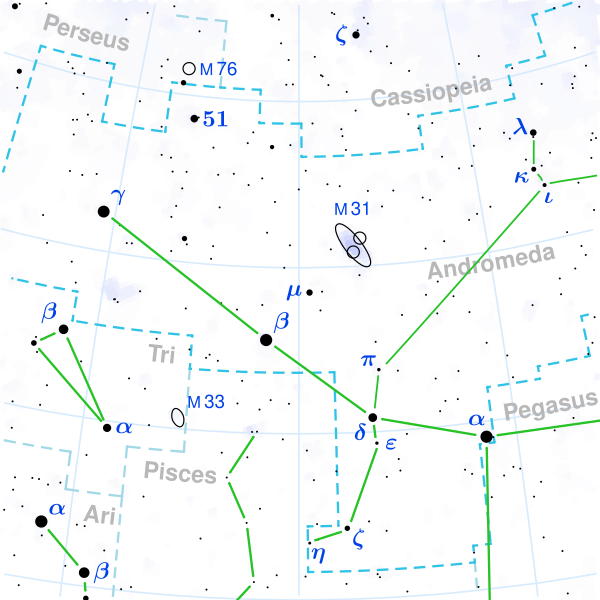

Andromeda is a large constellation in the northern sky, the 19th biggest of the 88 constellations recognised by the International Astronomical Union (IAU). It covers 722 square degrees, roughly 1.75% of the celestial sphere, and is best placed for observation in November. Andromeda is visible from latitudes +90° to –40° and borders Perseus, Cassiopeia, Lacerta, Pegasus, Pisces, and Triangulum.

Torsten Bronger / Kxx / Szczureq / Chermundy, Wikimedia Commons, CC BY-SA 3.0
{kind=link}
The constellation represents the mythological princess Andromeda, daughter of King Cepheus and Queen Cassiopeia. After Cassiopeia boasted that her daughter surpassed the sea nymphs in beauty, Poseidon sent the sea monster Cetus to ravage the kingdom. Andromeda was chained to a rock as a sacrifice, but Perseus killed the monster and married her. The surrounding constellations, Perseus, Cassiopeia, Cepheus, Cetus, and Pegasus, share this mythological cycle. Andromeda is one of the 48 constellations listed by the Greek astronomer Ptolemy in his 2nd-century Almagest.
Notable stars
Andromeda has three bright stars of similar magnitude. Alpheratz (α And, magnitude 2.06) is a blue-white subgiant about 97 light-years away. It also marks the northeast corner of the Great Square of Pegasus; historically it belonged to both constellations until the IAU fixed the boundaries in 1930. Mirach (β And, magnitude 2.05) is a red giant roughly 197 light-years distant and serves as a useful guide star for finding the Andromeda Galaxy. Almach (γ And, magnitude 2.1) lies about 390 light-years away and is a celebrated telescopic double: the orange primary and its blue-white companion, separated by 9.6 arcseconds, offer a striking colour contrast through a small telescope.
The Andromeda Galaxy
The constellation's most famous object is the Andromeda Galaxy (M31), the nearest large spiral galaxy to the Milky Way at about 2.5 million light-years (765 kpc). At apparent magnitude 3.44, it is the most distant object visible to the unaided eye under dark skies, though what the eye sees is only the bright core as a small fuzzy patch. The galaxy's full angular extent is about 3° × 1°, roughly six times the width of the full Moon. M31 spans about 152,000 light-years across and contains roughly one trillion stars.
The Persian astronomer Abd al-Rahman al-Sufi first recorded M31 around 964 CE as a "little cloud". Edwin Hubble proved in 1925, using Cepheid variable stars, that it lies far beyond the Milky Way and is a separate galaxy. Two satellite galaxies, M32 and M110, are also visible within the constellation's boundaries.
Other deep-sky objects
NGC 891 is a striking edge-on spiral galaxy about 30 million light-years away, noted for its prominent dust lane. The Blue Snowball Nebula (NGC 7662) is a planetary nebula that shows a blue-green disc through a small telescope. Several open clusters, including NGC 752 and NGC 7686, are visible with binoculars.
The Andromedids
The Andromedids are a meteor shower linked to the debris of comet 3D/Biela. Today they produce fewer than two meteors per hour, but in 1872 and 1885 they unleashed spectacular storms of roughly two meteors per second.